语音与视频通话
本章介绍如何与同事进行一对一的语音、视频通话，以及如何在群聊里发起多人通话。通话过程中还可以共享屏幕和电脑声音。
- 适用：全体员工
- 一对一通话：对方需要在线，且当前没有在通话
- 群通话：需要企业开启「群语音 / 群视频通话」开关，每场最多 16 人（含发起人）
发起一对一通话
以下几个位置都可以发起通话，语音通话与视频通话的入口总是成对出现：
- 单聊窗头部右侧的电话图标（语音通话）和摄像机图标（视频通话），见下图。
- 在主面板通讯录里右键联系人，选 语音通话 或 视频通话。
- 联系人资料窗里的 语音通话、视频通话 按钮。
- 主面板左下角系统菜单「发起」分组里的 发起语音通话、发起视频通话：先在弹出的窗口里选择联系人，再开始呼叫。
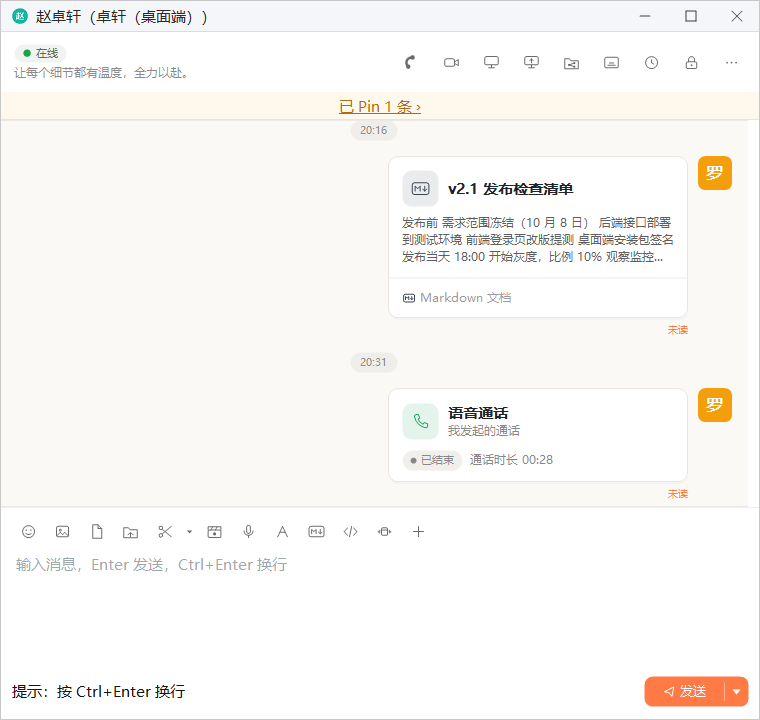
1 2 3- 语音通话：发起一对一语音通话
- 视频通话：发起一对一视频通话
- 通话记录卡片：通话结束后自动出现，详见本章「通话记录」一节
呼叫与接听
发起后会打开通话窗口，显示对方的头像和「正在呼叫，等待对方接听…」。对方接听之前，可以点右下角的红色按钮取消呼叫。
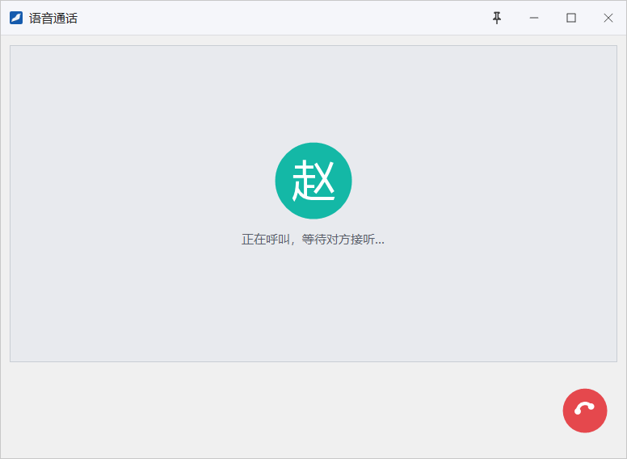
对方的屏幕右下角会弹出来电窗。标题栏显示通话类型和倒计时「N 秒后无人接听自动结束」，正文写明「某某 邀请你语音通话」（视频通话时为「邀请你视频通话」）。点左边的红色按钮拒绝，点右边的绿色按钮接听。
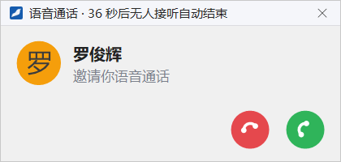
通话中的操作
接通后，窗口标题变为「与 某某 语音通话中」，画面区显示对方的头像、通话状态和通话时长，底部是一排操作按钮：
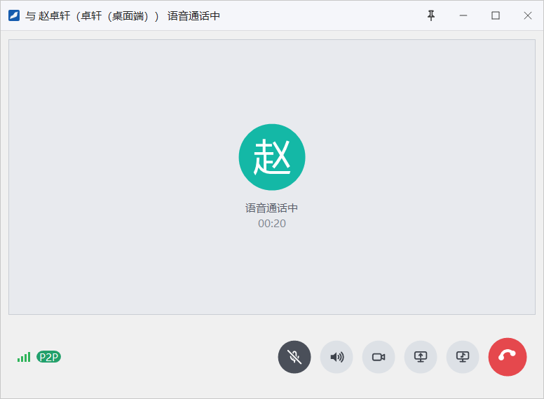
1 2 3 4 5 6 7 8- 网络质量：信号格表示当前网络状况；显示「P2P」说明双方直接连接，没有经过服务器中转。鼠标停在信号格上可以查看线路、往返时延和丢包等数据
- 麦克风：打开或关闭自己的麦克风，关闭后对方听不到你的声音
- 调节音量：弹出滑块，调节你听到的声音大小，不影响对方
- 切到视频：把语音通话切换为视频通话
- 共享屏幕：把这次通话变成一场屏幕共享，见「屏幕共享」
- 共享电脑声音：把电脑上其他程序播放的声音一并传给对方，建议佩戴耳机
- 挂断：结束通话
- 固定在桌面：窗口置顶，且不能移动和改变大小；再点一次取消固定
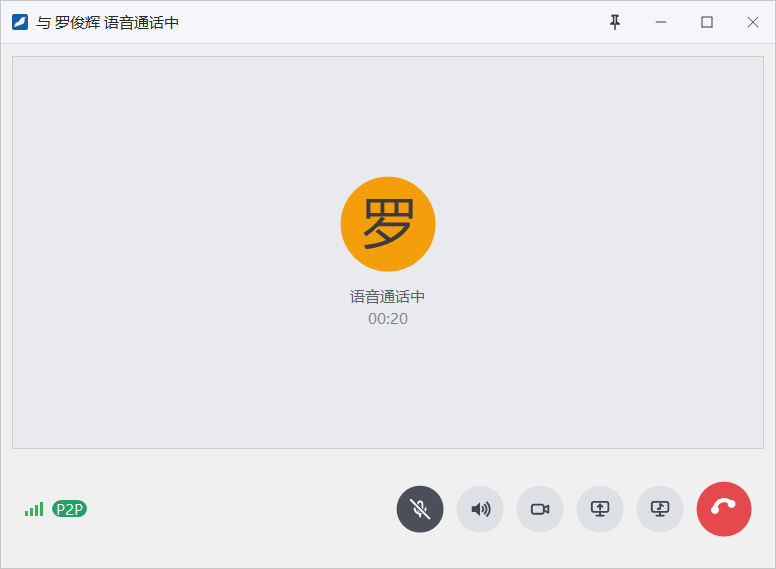
对方的窗口与你的相同，标题显示「与 罗俊辉 语音通话中」。
截图中双方都关闭了麦克风，所以麦克风按钮显示为深色，鼠标停在上面会提示「打开麦克风」。麦克风打开时按钮为浅色，提示变为「关闭麦克风」。
网络变差时，画面区上方会出现「当前网络不佳，通话可能卡顿」或「对方网络不佳」的提示。
视频通话
视频通话的发起、接听和挂断与语音通话完全相同，区别只在于窗口里多了摄像头画面：
- 对方的画面铺满窗口，自己的画面以小画面显示。双击大画面或单击小画面，可以对调大小画面。
- 底部按钮浮在画面上，鼠标停止移动片刻后自动隐藏，移动鼠标即重新出现。
- 按钮比语音通话多一个 打开摄像头 / 关闭摄像头：只关闭自己的画面，通话仍是视频通话；原来的 切到视频 变为 切回语音。
- 摄像头不可用时，画面上会说明原因，例如「未检测到摄像头」「摄像头打不开，可能已被其它程序占用」，这时对方看不到你的画面。
通话记录
通话结束后，聊天里会出现一张通话记录卡片（见本章第一张图的标注 3）。卡片标题为「语音通话」或「视频通话」，副标题写明发起人（「我发起的通话」或「某某发起的通话」），下方的状态标签写明通话结果：
| 通话结果 | 发起方看到 | 被叫方看到 |
|---|---|---|
| 接通后正常结束 | 「已结束」，旁边写着通话时长，如「通话时长 00:41」 | |
| 无人接听 | 对方未接听 | 未接听 |
| 被拒绝 | 对方已拒绝 | 已拒绝 |
| 接通前取消 | 已取消 | 对方已取消 |
群通话
在群聊里可以发起多人语音或视频通话。一个群同时只能有一场群通话，每场最多 16 人（含发起人）。群聊窗头部的通话按钮只在企业开启「群语音 / 群视频通话」开关后显示，开关的位置见「功能开关」。
发起群通话
- 打开群聊窗，点头部右侧的电话图标（语音通话）或摄像机图标（视频通话）。如果本群已经有一场进行中的群通话，点这两个按钮会直接加入那一场。
- 在「选择通话成员」窗口里勾选要邀请的成员，可以用上方的搜索框查找。右侧列出已选成员，左下角显示已选人数。
- 点 开始通话，被选中的成员会收到来电邀请。
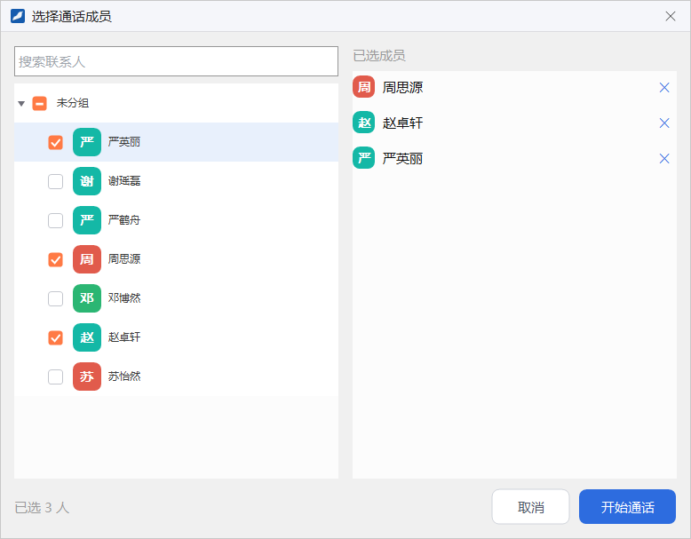
群通话窗口
通话窗口以宫格显示每位成员的头像和名字，自己显示为「我」。还没接听的成员标注「等待接听」，关闭了麦克风的标注「已静音」，网络中断的标注「连接中断」。
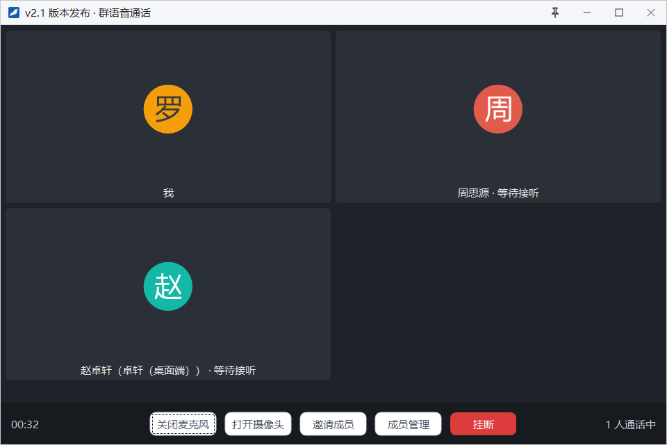
窗口底部左侧是通话时长，右侧是「N 人通话中」，中间的按钮依次为：
- 关闭麦克风 / 打开麦克风：开关自己的麦克风。
- 打开摄像头 / 关闭摄像头：开关自己的摄像头画面。同时打开摄像头的人数有上限，满员时会提示稍后再试。
- 邀请成员：追加邀请本群的其他成员，候选名单里不包含已在通话中或正在被邀请的人。
- 成员管理：只有发起人、群主和管理员能看到，见下文「群通话的成员管理」。
- 挂断：退出本次群通话，其他人可以继续通话。
标题栏同样有图钉图标，可以把窗口固定在桌面上。
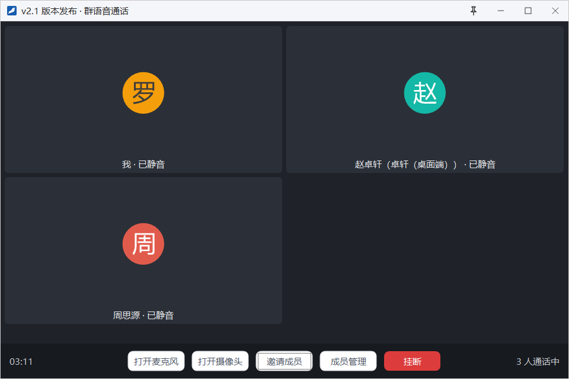
接听与加入群通话
被邀请的成员屏幕右下角会弹出来电窗，标题为「群语音通话」（或「群视频通话」）加上倒计时，正文写明邀请人、群名和当前通话人数。点绿色按钮加入，点红色按钮拒绝。
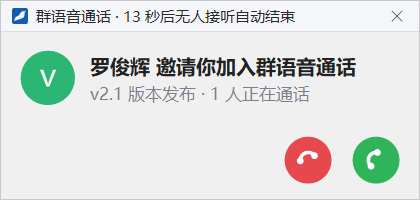
没有被邀请、或者错过了邀请的成员也可以加入：群通话进行期间，群聊窗里会显示一条横幅「群语音通话进行中 · N 人，点击加入 ›」，点它即可加入；聊天里的群通话卡片在通话进行中也有 加入 按钮。
群通话的成员管理
发起人、群主和管理员点 成员管理，会弹出以下菜单：
- 全员静音：勾选后所有人的麦克风都被关闭，并且只有发起人、群主和管理员可以重新打开麦克风；再点一次即解除。
- 每位成员的名字下有子菜单：静音 关闭该成员的麦克风（对方可以自己重新打开）；移出通话 把该成员移出本次通话。对还没接听的成员，这一项显示为 取消邀请。
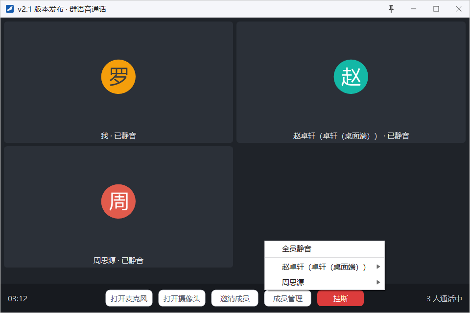
群通话卡片
群通话发起后，群聊里会出现一张「群语音通话」（或「群视频通话」）卡片。通话进行中卡片显示「正在通话 · N 人」，结束后显示「通话已结束 · 时长 mm:ss」。
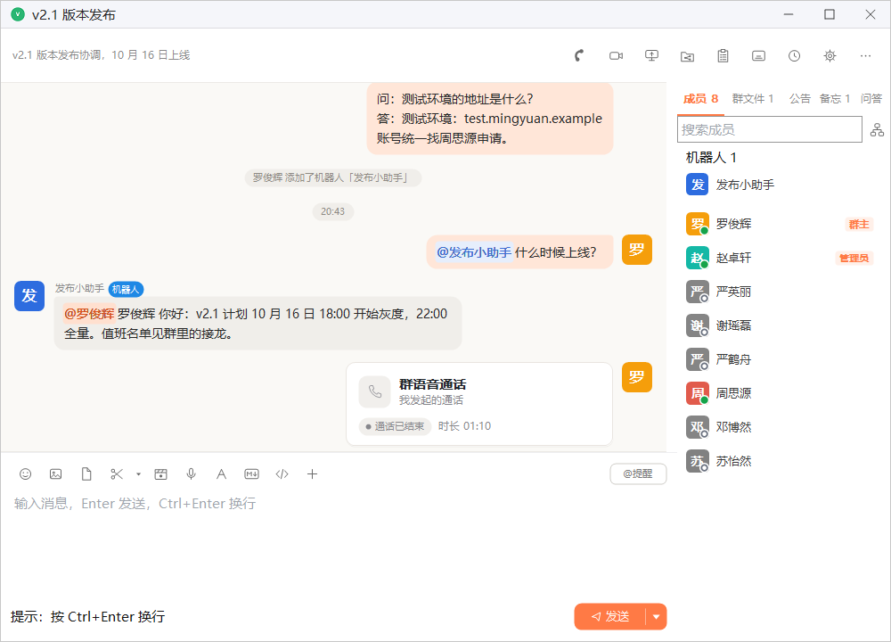
1 2 3- 语音通话：发起或加入群语音通话
- 视频通话：发起或加入群视频通话
- 群通话卡片：显示通话状态，进行中时可以点「加入」